pacman::p_load(dplyr,tidyr,ggplot2,readxl,scales,ggstatsplot,patchwork,lubridate, readr)Take-home Exercise 2
1. Overview
1.1 Project Brief
Take-home exercise 2 is a preliminary work of the final group project - Customer behavior in Latin American Fintech. In the financial technology (Fintech) industry, understanding customer behavior and identifying factors that influence customer retention and churn have become increasingly important. High customer churn can negatively affect business sustainability and profitability, raising concerns among fintech companies about how to improve customer satisfaction, engagement, and loyalty. Therefore, effective data analysis and visualization are essential to help (1) identify patterns and trends in customer behavior and (2) understand the key factors associated with customer churn.
The project team consists of three members, and each member will take one of the main prototype modules as follows:
Exploratory Data Analysis & Confirmatory Data Analysis
Cluster Analysis
Decision Tree Analysis
1.2 Project Objective
The project will be using data from A comprehensive dataset of customer behavior in Latin American Fintech: 12-month transactional and demographic data for churn analysis paper. The objective of my assignment is to build a prototype - user interface (UI) design on Exploratory Data Analysis & Confirmatory Data Analysis that provides easy-to-use and insightful visualisation tools.
2. Data Preparation
2.1 Overview of the Data
The dataset contains information on 48,723 customers of a Colombian fintech company, collected over a 12-month period from January 4, 2023, to December 29, 2023. The 48,723 customers represent the complete active customer base for calendar year 2023, making this a comprehensive population study rather than a sample.
The dataset comprises 57 variables categorized into demographics, product usage, transaction records, customer feedback, digital engagement, and derived metrics.
Data are organized in two CSV files with relational structure:
customer_data.csv: Contains customer-level information including demographics, product portfolio, satisfaction metrics, and aggregated behavioral features (one row per customer, 48,723 rows).
transactions_data.csv: Contains transaction-level data for all customers over the 12-month period (one row per transaction, 3,159,157 rows).
2.2 Install and Launch R Packages
The project uses p_load() of pacman package to check if the R packages are installed in the computer.
The following code chunk is used to install and launch the R packages.
2.3 Import Data
The project will examine A comprehensive dataset of customer behavior in Latin American Fintech. There are 2 files which are
customer <- read.csv("data/customer_data.csv", na.strings = c("", "NA"))transaction <- read.csv("data/transactions_data.csv")2.4 Data Cleaning
2.4.1 Handling missing value
To examine missing values for each variable individually, the code chunk below was used to compute the number of missing observations by column.
colSums(is.na(customer)) customer_id age
0 0
gender location
0 0
income_bracket occupation
0 0
education_level marital_status
0 0
household_size acquisition_channel
0 0
customer_segment savings_account
0 0
credit_card personal_loan
0 0
investment_account insurance_product
0 0
active_products app_logins_frequency
0 0
feature_usage_diversity bill_payment_user
0 0
auto_savings_enabled credit_utilization_ratio
0 18263
international_transactions failed_transactions
0 0
tx_count avg_tx_value
0 0
total_tx_volume first_tx
0 0
last_tx base_satisfaction
0 0
tx_satisfaction product_satisfaction
0 0
satisfaction_score nps_score
0 0
last_survey_date support_tickets_count
0 0
resolved_tickets_ratio app_store_rating
0 0
feedback_sentiment feature_requests
0 16115
complaint_topics clv_segment
24346 0
monthly_transaction_count average_transaction_value
0 0
total_transaction_volume transaction_frequency
0 0
last_transaction_date preferred_transaction_type
0 0
first_transaction_date weekend_transaction_ratio
0 0
avg_daily_transactions customer_tenure
0 0
churn_probability customer_lifetime_value
0 0 After inspecting the dataset using colSums(is.na(customer)), only ‘complaint_topics’ (49.97%), ‘credit_utilization_ratio’ (37.48%), and ‘feature_requests’ (33.07%) contain missing values when the corresponding product or interaction is not applicable.
These columns will be dropped using the code chunk below.
customer <- customer %>% select(-credit_utilization_ratio)
customer <- customer %>% select(-feature_requests)
customer <- customer %>% select(-complaint_topics)2.4.2 Check Data Duplication
For the customer dataset, it is necessary to verify whether the customer_id values are duplicated. Each customer should have a unique identifier to ensure data accuracy and consistency.
sum(duplicated(customer$customer_id))[1] 02.4.3 Correct Data Type
2.4.3.1 Check Data Type of Each Column
Checking the data type of each column in a dataset is an essential step in data preprocessing. Different types of analyses and operations require variables to be in the correct format by using the code chunk below.
str(customer)'data.frame': 48723 obs. of 51 variables:
$ customer_id : int 93716481 49020929 52690950 23199751 61997066 85721098 97779724 65536017 22020116 14024733 ...
$ age : int 44 44 45 45 44 45 44 44 45 44 ...
$ gender : chr "Male" "Male" "Male" "Male" ...
$ location : chr "Pereira, Risaralda" "Cali, Valle del Cauca" "Barranquilla, Atlántico" "Bogotá, Cundinamarca" ...
$ income_bracket : chr "Very High" "Medium" "High" "High" ...
$ occupation : chr "Engineer" "Construction Worker" "Construction Worker" "Electrician" ...
$ education_level : chr "Master" "Bachelor" "Bachelor" "High School" ...
$ marital_status : chr "Married" "Married" "Married" "Single" ...
$ household_size : int 5 2 4 2 3 4 4 3 1 3 ...
$ acquisition_channel : chr "Partnership" "Paid Ad" "Paid Ad" "Referral" ...
$ customer_segment : chr "occasional" "regular" "inactive" "inactive" ...
$ savings_account : chr "True" "True" "True" "True" ...
$ credit_card : chr "True" "False" "False" "False" ...
$ personal_loan : chr "False" "False" "False" "False" ...
$ investment_account : chr "False" "False" "True" "True" ...
$ insurance_product : chr "True" "False" "True" "False" ...
$ active_products : int 1 5 3 2 1 1 1 4 2 3 ...
$ app_logins_frequency : int 15 30 4 15 19 15 44 22 7 11 ...
$ feature_usage_diversity : int 3 0 4 4 1 4 6 1 1 6 ...
$ bill_payment_user : chr "False" "True" "True" "True" ...
$ auto_savings_enabled : chr "False" "False" "False" "False" ...
$ international_transactions: int 1 1 1 1 0 0 0 0 0 1 ...
$ failed_transactions : int 0 0 0 1 0 0 1 1 0 0 ...
$ tx_count : int 76 10 10 23 18 15 24 45 134 13 ...
$ avg_tx_value : num 1679872 5445810 640335 660180 14574469 ...
$ total_tx_volume : num 1.28e+08 5.45e+07 6.40e+06 1.52e+07 2.62e+08 ...
$ first_tx : chr "2023-01-05" "2023-02-05" "2023-01-31" "2023-01-10" ...
$ last_tx : chr "2023-12-25" "2023-12-20" "2023-12-12" "2023-12-24" ...
$ base_satisfaction : num 9.21 6.07 8.2 7.53 6.61 ...
$ tx_satisfaction : num 0.38 0.05 0.05 0.115 0.09 0.075 0.12 0.225 0.67 0.065 ...
$ product_satisfaction : num 0.6 0.2 0.6 0.4 0.4 0.6 0.4 0.4 0.6 0.8 ...
$ satisfaction_score : int 5 3 4 4 3 4 4 4 5 4 ...
$ nps_score : int -7 -46 -29 -31 -47 -29 -34 -36 -4 -27 ...
$ last_survey_date : chr "2023-12-16" "2023-05-05" "2023-11-16" "2023-05-07" ...
$ support_tickets_count : int 1 1 0 2 2 1 1 0 2 0 ...
$ resolved_tickets_ratio : num 0 1 0 0.5 1 1 1 0 1 0 ...
$ app_store_rating : num 3.5 4 5 4.5 4 4 5 4.5 4.5 4.5 ...
$ feedback_sentiment : chr "Neutral" "Positive" "Positive" "Positive" ...
$ clv_segment : chr "Gold" "Bronze" "Gold" "Bronze" ...
$ monthly_transaction_count : num 1.43 1.57 2.5 1.56 2.11 ...
$ average_transaction_value : num 6054025 2127414 3575915 1513354 612674 ...
$ total_transaction_volume : num 60540250 23401550 35759150 21186950 11640800 ...
$ transaction_frequency : num 0.0308 0.0329 0.05 0.0478 0.0619 ...
$ last_transaction_date : chr "2023-12-05" "2023-12-18" "2023-10-27" "2023-11-30" ...
$ preferred_transaction_type: chr "Transfer" "Transfer" "Transfer" "Transfer" ...
$ first_transaction_date : chr "2023-01-05" "2023-02-05" "2023-01-31" "2023-01-10" ...
$ weekend_transaction_ratio : num 0.3 0.182 0.3 0.143 0.316 ...
$ avg_daily_transactions : num 0.0308 0.0329 0.05 0.0478 0.0619 ...
$ customer_tenure : num 11.63 11.5 8.77 10.73 11.63 ...
$ churn_probability : num 0.362 0.182 0.321 0.337 0.398 ...
$ customer_lifetime_value : num 3.12e+08 1.67e+08 1.94e+07 3.60e+07 3.05e+08 ...2.4.3.2 Correct the data type
The Code chunk below is ot change data type of the variables that have incorrect data type
- Customer data
customer$customer_id <- as.character(customer$customer_id)
customer$first_tx<- as.Date(customer$first_tx)
customer$last_tx <- as.Date(customer$last_tx)
customer$last_survey_date <- as.Date(customer$last_survey_date)
customer$last_transaction_date <- as.Date(customer$last_transaction_date)
customer$first_transaction_date <- as.Date(customer$first_transaction_date)- Transaction data
transaction$date <- as.Date(transaction$date)
transaction <- transaction %>%
mutate(
year_month = floor_date(date, "month"),
year = year(date),
month = month(date, label = TRUE)
)2.4.3.3 Recoding categorical variables
Although many variables in the dataset are recorded using numerical codes (e.g., 1–5), these values do not represent actual quantities or measurements but instead correspond to ordered categories or levels of perception. If left as numeric variables, R would treat them as continuous numbers. Therefore, these variables need to be recoded as ordered factors with meaningful labels to ensure accurate and appropriate analysis and visualization by using the code chunk below.
customer <- customer |>
mutate(
active_products = factor(active_products,
levels = c(0,1,2,3,4,5),
labels = c("0 product",
"1 product",
"2 products",
"3 products",
"4 products",
"5 products")),
satisfaction_score = factor(satisfaction_score,
levels = c(2,3,4,5,6),
labels = c("Very low",
"Low",
"Medium",
"High",
"Very high")),
app_logins_group = cut(app_logins_frequency,
breaks = c(0,25,50,100),
labels = c("Rarely","Often","Always"),
include.lowest = TRUE))2.4.4 Check logic Consistency
Churn_probability should be in [0,1] satsfaction_core must in the range [1,6]
summary(customer) customer_id age gender location
Length:48723 Min. :29.00 Length:48723 Length:48723
Class :character 1st Qu.:30.00 Class :character Class :character
Mode :character Median :45.00 Mode :character Mode :character
Mean :44.54
3rd Qu.:59.00
Max. :60.00
income_bracket occupation education_level marital_status
Length:48723 Length:48723 Length:48723 Length:48723
Class :character Class :character Class :character Class :character
Mode :character Mode :character Mode :character Mode :character
household_size acquisition_channel customer_segment savings_account
Min. : 1.000 Length:48723 Length:48723 Length:48723
1st Qu.: 2.000 Class :character Class :character Class :character
Median : 3.000 Mode :character Mode :character Mode :character
Mean : 3.496
3rd Qu.: 4.000
Max. :13.000
credit_card personal_loan investment_account insurance_product
Length:48723 Length:48723 Length:48723 Length:48723
Class :character Class :character Class :character Class :character
Mode :character Mode :character Mode :character Mode :character
active_products app_logins_frequency feature_usage_diversity
0 product : 0 Min. : 4.00 Min. : 0.00
1 product :19576 1st Qu.: 15.00 1st Qu.: 1.00
2 products:14653 Median : 22.00 Median : 2.00
3 products: 7197 Mean : 22.38 Mean : 2.37
4 products: 4871 3rd Qu.: 30.00 3rd Qu.: 4.00
5 products: 2426 Max. :100.00 Max. :10.00
bill_payment_user auto_savings_enabled international_transactions
Length:48723 Length:48723 Min. :0.0000
Class :character Class :character 1st Qu.:0.0000
Mode :character Mode :character Median :0.0000
Mean :0.4939
3rd Qu.:1.0000
Max. :6.0000
failed_transactions tx_count avg_tx_value total_tx_volume
Min. :0.0000 Min. : 10.00 Min. : 318215 Min. :3.182e+06
1st Qu.:0.0000 1st Qu.: 12.00 1st Qu.: 1339114 1st Qu.:2.016e+07
Median :0.0000 Median : 18.00 Median : 1763107 Median :4.808e+07
Mean :0.1988 Mean : 64.84 Mean : 3564852 Mean :2.575e+08
3rd Qu.:0.0000 3rd Qu.: 35.00 3rd Qu.: 4658536 3rd Qu.:1.204e+08
Max. :4.0000 Max. :77465.00 Max. :51670303 Max. :1.073e+12
first_tx last_tx base_satisfaction tx_satisfaction
Min. :2023-01-04 Min. :2023-05-11 Min. : 4.250 Min. :0.0500
1st Qu.:2023-01-07 1st Qu.:2023-12-05 1st Qu.: 7.326 1st Qu.:0.0600
Median :2023-01-14 Median :2023-12-19 Median : 8.005 Median :0.0900
Mean :2023-01-21 Mean :2023-12-11 Mean : 8.001 Mean :0.1772
3rd Qu.:2023-01-28 3rd Qu.:2023-12-26 3rd Qu.: 8.676 3rd Qu.:0.1750
Max. :2023-08-10 Max. :2023-12-29 Max. :11.937 Max. :1.0000
product_satisfaction satisfaction_score nps_score last_survey_date
Min. :0.0000 Very low : 16 Min. :-80.00 Min. :2023-01-01
1st Qu.:0.4000 Low : 4575 1st Qu.:-34.00 1st Qu.:2023-04-01
Median :0.4000 Medium :31823 Median :-28.00 Median :2023-07-03
Mean :0.4737 High :12095 Mean :-26.76 Mean :2023-07-02
3rd Qu.:0.6000 Very high: 214 3rd Qu.:-19.00 3rd Qu.:2023-10-01
Max. :1.0000 Max. : 23.00 Max. :2023-12-31
support_tickets_count resolved_tickets_ratio app_store_rating
Min. :0.0000 Min. :0.0000 Min. :2.000
1st Qu.:0.0000 1st Qu.:0.0000 1st Qu.:4.000
Median :1.0000 Median :0.5000 Median :4.000
Mean :0.9975 Mean :0.5062 Mean :4.156
3rd Qu.:2.0000 3rd Qu.:1.0000 3rd Qu.:4.500
Max. :7.0000 Max. :1.0000 Max. :5.000
feedback_sentiment clv_segment monthly_transaction_count
Length:48723 Length:48723 Min. : 1.000
Class :character Class :character 1st Qu.: 1.600
Mode :character Mode :character Median : 2.000
Mean : 5.765
3rd Qu.: 3.091
Max. :6455.417
average_transaction_value total_transaction_volume transaction_frequency
Min. : 318215 Min. :3.182e+06 Min. : 0.02786
1st Qu.: 1339114 1st Qu.:2.016e+07 1st Qu.: 0.04154
Median : 1763107 Median :4.808e+07 Median : 0.05764
Mean : 3564852 Mean :2.575e+08 Mean : 0.18656
3rd Qu.: 4658536 3rd Qu.:1.204e+08 3rd Qu.: 0.10314
Max. :51670303 Max. :1.073e+12 Max. :215.77994
last_transaction_date preferred_transaction_type first_transaction_date
Min. :2023-05-11 Length:48723 Min. :2023-01-04
1st Qu.:2023-12-05 Class :character 1st Qu.:2023-01-07
Median :2023-12-19 Mode :character Median :2023-01-14
Mean :2023-12-11 Mean :2023-01-21
3rd Qu.:2023-12-26 3rd Qu.:2023-01-28
Max. :2023-12-29 Max. :2023-08-10
weekend_transaction_ratio avg_daily_transactions customer_tenure
Min. :0.0000 Min. : 0.02786 Min. : 4.70
1st Qu.:0.2143 1st Qu.: 0.04154 1st Qu.:11.17
Median :0.2800 Median : 0.05764 Median :11.63
Mean :0.2829 Mean : 0.18656 Mean :11.37
3rd Qu.:0.3400 3rd Qu.: 0.10314 3rd Qu.:11.87
Max. :0.9091 Max. :215.77994 Max. :11.97
churn_probability customer_lifetime_value app_logins_group
Min. :0.1143 Min. :0.000e+00 Rarely:30184
1st Qu.:0.3029 1st Qu.:5.841e+07 Often :17314
Median :0.3540 Median :1.297e+08 Always: 1225
Mean :0.3429 Mean :3.282e+08
3rd Qu.:0.3927 3rd Qu.:2.974e+08
Max. :0.5006 Max. :1.777e+10 3. Exploratory Data Analysis
3.1 Check correlation
As a first step in the Exploratory Data Analysis (EDA), correlation analysis is performed to examine the relationships between numerical variables in the dataset. Checking correlations helps identify whether variables are positively or negatively related and how strongly they are associated with each other.
Code
library(corrplot)
corr_matrix <- cor(customer[, sapply(customer, is.numeric)])
corrplot(corr_matrix, method = "color")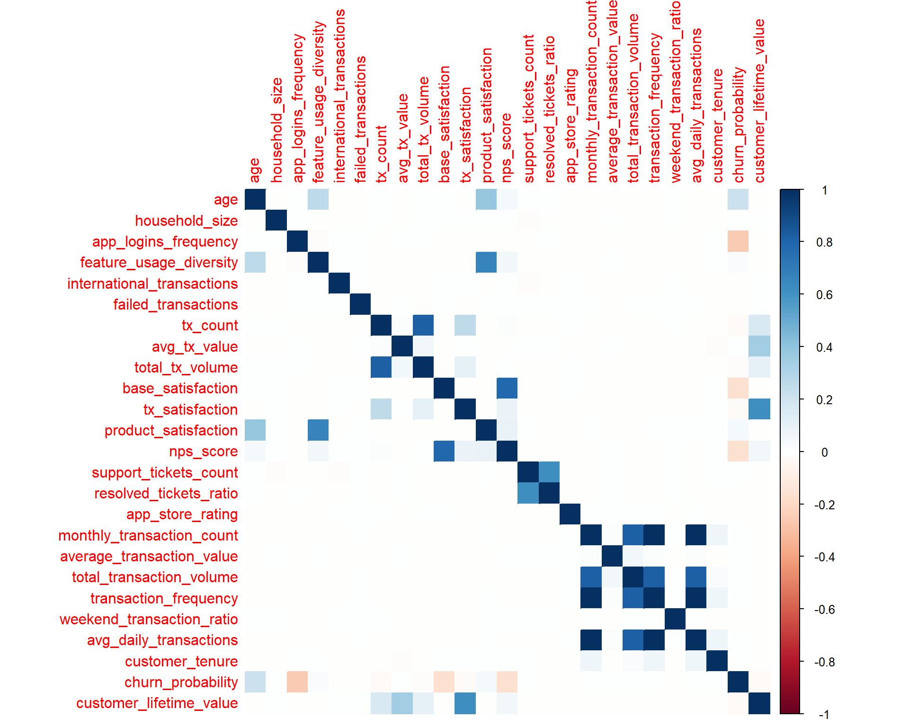
3.2 Customer Profile Overview
The dashboard was developed in R using the ggplot2, dplyr, and patchwork packages. Key performance indicators (KPIs), including total customers, average age, and average household size, were calculated using nrow() and mean().
A KPI summary panel was created using ggplot() and annotate() to display the calculated metrics as text.
For categorical variables such as gender, income bracket, customer segment, and acquisition channel, the count() function was used to aggregate frequencies. These results were visualized using bar charts with geom_bar(stat = "identity").
Code
total_customers <- nrow(customer)
avg_age <- round(mean(customer$age), 1)
avg_household <- round(mean(customer$household_size), 1)
kpi_plot <- ggplot() +
annotate("text", x = 1, y = 3,
label = paste("Total Customers:", total_customers),
size = 5) +
annotate("text", x = 1, y = 2,
label = paste("Average Age:", avg_age),
size = 5) +
annotate("text", x = 1, y = 1,
label = paste("Avg Household Size:", avg_household),
size = 5) +
xlim(0, 2) + ylim(0, 4) +
theme_void()
gender_plot <- customer %>%
count(gender) %>%
ggplot(aes(x = gender, y = n)) +
geom_bar(stat = "identity",fill = "darkgreen") +
theme_minimal() +
labs(title = "Gender Distribution",
x = "Gender", y = "Count")
income_plot <- customer %>%
count(income_bracket) %>%
ggplot(aes(x = income_bracket, y = n)) +
geom_bar(stat = "identity", fill = "orange") +
theme_minimal() +
labs(title = "Income Distribution",
x = "Income", y = "Count") +
theme(axis.text.x = element_text(angle = 45, hjust = 1))
segment_plot <- customer %>%
count(customer_segment) %>%
ggplot(aes(x = customer_segment, y = n)) +
geom_bar(stat = "identity", fill = "purple") +
theme_minimal() +
labs(title = "Customer Segment",
x = "Segment", y = "Count")
acquisition_plot <- customer %>%
count(acquisition_channel) %>%
ggplot(aes(x = acquisition_channel, y = n)) +
geom_bar(stat = "identity", fill = "steelblue") +
theme_minimal() +
labs(title = "Acquisition Channel",
x = "Channel", y = "Count")
kpi_plot /(gender_plot | income_plot) /(segment_plot | acquisition_plot)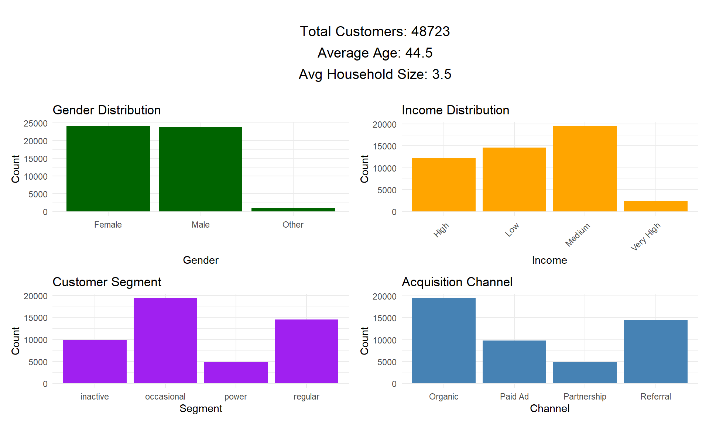
TipInsight
This dashboard provides a high-level overview of the customer base. The company primarily serves middle-income, middle-aged customers with balanced gender distribution. Most users are occasional or regular users, indicating significant potential to increase engagement. Organic and referral channels are the strongest acquisition drivers, suggesting strong brand presence and customer advocacy.
3.3 Transaction Pattern
The transaction data was aggregated at a monthly level to analyze seasonal patterns and transaction trends. Using the group_by() function, transactions were grouped by both transaction type and month (year_month). For each group, two metrics were calculated: total transaction count (n()) and total transaction amount (sum(amount, na.rm = TRUE))
The dataset was then separated into four transaction categories: Transfer, Payment, Withdrawal, and Deposit. For each category, a scaling factor was computed by dividing the maximum transaction count by the maximum transaction amount. This scaling factor was used to align transaction amounts with transaction counts on a secondary y-axis, allowing both metrics to be visualized simultaneously in a single chart.
Code
monthly_type <- transaction %>%
group_by(type, year_month) %>%
summarise(
transaction_count = n(),
transaction_amount = sum(amount, na.rm = TRUE),
.groups = "drop"
)
transfer_data <- monthly_type %>%
filter(type == "Transfer")
payment_data <- monthly_type %>%
filter(type == "Payment")
withdrawal_data <- monthly_type %>%
filter(type == "Withdrawal")
deposit_data <- monthly_type %>%
filter(type == "Deposit")
scale_factor_t <- max(transfer_data$transaction_count) /
max(transfer_data$transaction_amount)
scale_factor_p <- max(payment_data$transaction_count) /
max(payment_data$transaction_amount)
scale_factor_w <- max(withdrawal_data$transaction_count) /
max(withdrawal_data$transaction_amount)
scale_factor_d <- max(deposit_data$transaction_count) /
max(deposit_data$transaction_amount)
transfer <- ggplot(transfer_data, aes(x = year_month)) +
# Count (Primary axis)
geom_line(aes(y = transaction_count), linewidth = 1) +
geom_point(aes(y = transaction_count)) +
# Amount (Scaled)
geom_line(aes(y = transaction_amount * scale_factor_t),
linetype = "dashed",
linewidth = 1) +
scale_y_continuous(
name = "Transaction Count",
sec.axis = sec_axis(
~ . / scale_factor_t,
name = "Transaction Amount"
)
) +
scale_x_date(
date_breaks = "1 month",
date_labels = "%b %Y"
) +
labs(
title = "Monthly Transaction Count and Amount - Transfer",
x = "Month"
) +
theme_minimal() +
theme(axis.text.x = element_text(angle = 45, hjust = 1))
payment <- ggplot(payment_data, aes(x = year_month)) +
# Count (Primary axis)
geom_line(aes(y = transaction_count), linewidth = 1) +
geom_point(aes(y = transaction_count)) +
# Amount (Scaled)
geom_line(aes(y = transaction_amount * scale_factor_p),
linetype = "dashed",
linewidth = 1) +
scale_y_continuous(
name = "Transaction Count",
sec.axis = sec_axis(
~ . / scale_factor_p,
name = "Transaction Amount"
)
) +
scale_x_date(
date_breaks = "1 month",
date_labels = "%b %Y"
) +
labs(
title = "Monthly Transaction Count and Amount - Payment",
x = "Month"
) +
theme_minimal() +
theme(axis.text.x = element_text(angle = 45, hjust = 1))
withdrawal <- ggplot(withdrawal_data, aes(x = year_month)) +
# Count (Primary axis)
geom_line(aes(y = transaction_count), linewidth = 1) +
geom_point(aes(y = transaction_count)) +
# Amount (Scaled)
geom_line(aes(y = transaction_amount * scale_factor_w),
linetype = "dashed",
linewidth = 1) +
scale_y_continuous(
name = "Transaction Count",
sec.axis = sec_axis(
~ . / scale_factor_w,
name = "Transaction Amount"
)
) +
scale_x_date(
date_breaks = "1 month",
date_labels = "%b %Y"
) +
labs(
title = "Monthly Transaction Count and Amount - Withdrawal",
x = "Month"
) +
theme_minimal() +
theme(axis.text.x = element_text(angle = 45, hjust = 1))
deposit <- ggplot(deposit_data, aes(x = year_month)) +
# Count (Primary axis)
geom_line(aes(y = transaction_count), linewidth = 1) +
geom_point(aes(y = transaction_count)) +
# Amount (Scaled)
geom_line(aes(y = transaction_amount * scale_factor_d),
linetype = "dashed",
linewidth = 1) +
scale_y_continuous(
name = "Transaction Count",
sec.axis = sec_axis(
~ . / scale_factor_d,
name = "Transaction Amount"
)
) +
scale_x_date(
date_breaks = "1 month",
date_labels = "%b %Y"
) +
labs(
title = "Monthly Transaction Count and Amount - Deposit",
x = "Month"
) +
theme_minimal() +
theme(axis.text.x = element_text(angle = 45, hjust = 1))
(transfer+payment) / (withdrawal+deposit)
TipInsight
The transaction pattern analysis reveals:
Transfer transactions dominate in volume and consistency, with visible peaks around mid-year and early Q4. Seasonal spikes may be linked to business cycles or major financial periods (e.g., mid-year or year-end financial planning).
Payment and Deposit categories show stronger seasonal fluctuations, with clear increases in mid-year months.
Withdrawal activity is comparatively stable.
Deposits show periodic increases in both count and transaction amount, particularly during mid-year and late-year months.
Peaks in transaction amount often coincide with peaks in transaction count, suggesting synchronized behavioral patterns rather than isolated high-value transactions.
These findings support the presence of seasonality and provide a strong foundation for further time-series analysis, customer segmentation, and predictive modeling.
3.4 Digital Engagement Analysis
The Digital Engagement dashboard was developed using ggplot2 to summarize user activity, engagement behavior, and retention-related metrics.
The key engagement KPIs were calculated, including total users (nrow()), average app login frequency, average monthly transaction count, and average churn probability (formatted as percentage). These metrics provide a high-level overview of platform engagement and customer sentiment.
Several visualizations are used to explore relationships in the data. geom_point() creates scatter plots to examine the relationships between app login frequency and churn probability, and between monthly transaction count and total transaction volume, while a regression line (geom_smooth(method = "lm")) highlights the overall trend between engagement and churn risk. In addition, geom_boxplot() is used to show the distribution of feature usage diversity across different satisfaction score levels.
Code
total_users <- nrow(customer)
avg_logins <- round(mean(customer$app_logins_frequency, na.rm = TRUE),1)
avg_tx_freq <- round(mean(customer$monthly_transaction_count, na.rm = TRUE),2)
kpi_plot <- ggplot() +
annotate("text", x=1, y=5, label=paste("Total Users:", total_users), size=5) +
annotate("text", x=1, y=4, label=paste("Avg Logins:", avg_logins), size=5) +
annotate("text", x=1, y=3, label=paste("Avg Monthly Transaction:", avg_tx_freq), size=5) +
xlim(0,2) + ylim(0,6) +
theme_void()
login_churn_plot <- ggplot(customer, aes(x = app_logins_frequency, y = churn_probability)) +
geom_point(alpha = 0.6, color = "#2C7FB8") +
geom_smooth(method = "lm", se = FALSE, color = "red") +
theme_minimal() +
labs(title = "Relationship Between App Login Frequency and Churn")
feature_sat_plot <- ggplot(customer, aes(x = satisfaction_score, y = feature_usage_diversity))+
geom_boxplot() +
theme_minimal() +
labs(title = "Distribution of Feature Usage by Satiafaction Score")
transaction_plot <- ggplot(customer,
aes(x = monthly_transaction_count,
y = total_transaction_volume)) +
geom_point() +
theme_minimal() +
labs(title="Transaction Frequency vs Volume",
x="Monthly Transaction Count",
y="Total Transaction Volume")
kpi_plot /(login_churn_plot | feature_sat_plot) / transaction_plot
TipInsight
The relationship between app login frequency and churn probability shows a negative trend. Customers who log into the app more frequently tend to have lower churn probability, suggesting that higher engagement is associated with better customer retention.
The feature usage diversity increases with higher satisfaction levels. Customers with very high satisfaction scores tend to use more app features, as shown by the higher median and wider distribution in the boxplot.
The Transaction Frequency vs Volume plot shows a positive relationship between transaction count and total transaction volume.
3.5 Customer Experience
In this section, customer experience is analyzed by examining key metrics and relationships between engagement, satisfaction, feedback, and churn. The average churn probability provides a high-level overview of overall customer retention risk. Several visualizations are used to explore these relationships: geom_boxplot() illustrates how satisfaction relates to app login frequency and churn probability, geom_point() shows the relationship between churn probability and customer lifetime value (CLV), and geom_tile() visualizes the relationship between feedback sentiment and satisfaction score. Together, these visualizations help identify patterns in customer behavior and highlight factors associated with customer experience and churn risk.
Code
avg_churn <- percent(mean(customer$churn_probability, na.rm = TRUE))
kpi_plot <- ggplot() +
annotate("text", x=1, y=2, label=paste("Avg Churn Probability:", avg_churn), size=5) +
theme_void()
engagement_satisfaction_plot <- ggplot(customer,
aes(x =satisfaction_score,
y = app_logins_frequency)) +
geom_boxplot() +
theme_minimal() +
labs(title="Satisfaction VS Engagement",
x="Satisfaction Score",
y="App Login Frequency")
churn_plot <- ggplot(customer,
aes(x = churn_probability,
y = customer_lifetime_value)) +
geom_point() +
theme_minimal() +
labs(title="Churn Probability vs CLV",
x="Churn Probability",
y="Customer Lifetime Value")
x <- "feedback_sentiment"
y <- "satisfaction_score"
df <- customer %>%
count(.data[[x]], .data[[y]])
feedback_plot <- ggplot(df,
aes_string(x = x, y = y, fill = "n")) +
geom_tile() +
scale_fill_gradient(low = "white", high = "steelblue") +
theme_minimal() +
labs(title = "Feedback Sentiment VS Satisfaction Score")
satisfaction_churn_plot <- ggplot(customer,
aes(x = satisfaction_score,
y = churn_probability)) +
geom_boxplot() +
theme_minimal() +
labs(title="Satisfaction VS Churn Probability",
x="Satisfaction Score",
y="Churn Probability")
kpi_plot /(engagement_satisfaction_plot + churn_plot)/ ( feedback_plot + satisfaction_churn_plot)
TipInsight
The average churn probability across all customers is 34%, indicating a significant portion of the customer base is at risk of leaving.
Customer engagement, measured by app login frequency, is positively associated with satisfaction: more frequent logins tend to correspond with higher satisfaction scores.
The churn probability vs. CLV plot shows that most customers have moderate churn probability, but those with higher churn probability generally have lower customer lifetime value (CLV).
The Feedback sentiment VS Satisfaction score shows that positive feedback related to higher satisfaction score.
The Satisfaction VS Churn Probability shows that the higher satsfaction score result in lower churn probability.
3.6 Geographical Distribution of Customers
The code chunk below will be used to install and load package for handling geospatial data in RStudio
pacman::p_load(sf, tmap)3.6.1 Importing Geospatial Data into R
The code chunk below uses the st_read() function of sf package to import gadm41_COL_1 shapefile into R as a simple feature data frame
mpsz <- st_read(dsn = "data/geospatial",
layer = "gadm41_COL_1")Reading layer `gadm41_COL_1' from data source
`C:\Users\wlppw\OneDrive\Documents\walaipornp\ISSS608-VAA\Take-home_Ex\Take-home_Ex02\data\geospatial'
using driver `ESRI Shapefile'
Simple feature collection with 33 features and 11 fields
Geometry type: MULTIPOLYGON
Dimension: XY
Bounding box: xmin: -81.84153 ymin: -4.228429 xmax: -66.83774 ymax: 15.91248
Geodetic CRS: WGS 84Examine the content of mpsz by using the code chunk below.
mpszSimple feature collection with 33 features and 11 fields
Geometry type: MULTIPOLYGON
Dimension: XY
Bounding box: xmin: -81.84153 ymin: -4.228429 xmax: -66.83774 ymax: 15.91248
Geodetic CRS: WGS 84
First 10 features:
GID_1 GID_0 COUNTRY NAME_1 VARNAME_1 NL_NAME_1
1 COL.1_2 COL Colombia Amazonas NA NA
2 COL.2_2 COL Colombia Antioquia NA NA
3 COL.3_2 COL Colombia Arauca NA NA
4 COL.4_2 COL Colombia Atlántico NA NA
5 COL.5_2 COL Colombia Bogotá D.C. Distrito Capital de Bogotá NA
6 COL.6_2 COL Colombia Bolívar NA NA
7 COL.7_2 COL Colombia Boyacá NA NA
8 COL.8_2 COL Colombia Caldas NA NA
9 COL.9_2 COL Colombia Caquetá NA NA
10 COL.10_2 COL Colombia Casanare NA NA
TYPE_1 ENGTYPE_1 CC_1 HASC_1 ISO_1
1 Comisaría Commissiary NA CO.AM CO-AMA
2 Departamento Department NA CO.AN CO-ANT
3 Intendencia Intendancy NA CO.AR CO-ARA
4 Departamento Department NA CO.AT NA
5 Distrito Capital Capital District NA CO.DC NA
6 Departamento Department NA CO.BL NA
7 Departamento Department NA CO.BY NA
8 Departamento Department NA CO.CL CO-CAL
9 Intendencia Intendancy NA CO.CQ NA
10 Intendencia Intendancy NA CO.CS CO-CAS
geometry
1 MULTIPOLYGON (((-69.83933 -...
2 MULTIPOLYGON (((-75.59808 5...
3 MULTIPOLYGON (((-69.66426 6...
4 MULTIPOLYGON (((-74.87261 1...
5 MULTIPOLYGON (((-74.24053 4...
6 MULTIPOLYGON (((-74.24515 7...
7 MULTIPOLYGON (((-73.21047 4...
8 MULTIPOLYGON (((-75.75466 5...
9 MULTIPOLYGON (((-73.02097 -...
10 MULTIPOLYGON (((-72.90348 5...3.6.2 Joining the attribute data and geospatial data
This code prepares customer location data and joins it with the geographic shapefile of Colombian departments in order to visualize the geographical distribution of customers.
Code
library(dplyr)
library(sf)
library(stringi)
customer <- customer %>%
mutate(
department = stri_trim_both(stri_extract_first_regex(location, "(?<=, ).*")),
department_clean = stri_trans_general(department, "Latin-ASCII")
)
dept_customer <- customer %>%
group_by(department_clean) %>%
summarise(no_customers = n())
mpsz <- mpsz %>%
mutate(NAME_1_clean = stri_trans_general(NAME_1, "Latin-ASCII"))
mpsz_customers <- mpsz %>%
left_join(dept_customer, by = c("NAME_1_clean" = "department_clean"))3.6.3 Choropleth Mapping Geospatial Data Using tmap
Code
library(tmap)
tmap_mode("plot")
tm_shape(mpsz_customers) +
tm_polygons(
col = "no_customers",
border.col = "black",
palette = "YlOrRd",
colorNA = "gray90",
title = "Number of customers"
) +
tm_layout(
title = "Geographical Distribution of Customers",
frame = FALSE
)
4. Confirmatory Data Analysis
In this section, I will compare the factors that affect churn probability using a parametric method (Chi-square test) and a non-parametric method (Fisher’s Exact test).
In the dataset, churn_probability is a numerical variable. Therefore, it will be converted into three categories: low, medium, and high, using the code chunk below.
Code
library(dplyr)
customer <- customer %>%
mutate(
churn_group = cut(
churn_probability,
breaks = c(0,0.2,0.3,0.4),
labels = c("Low","Medium","High"),
include.lowest = TRUE
)
)4.1 Churn_probability VS Gender
Code
library(ggstatsplot)
p1 <- ggbarstats(customer, gender, churn_group, type="parametric", title = "Parametric")
p2 <- ggbarstats(customer, gender, churn_group, type="nonparametric",title = "Non-parametric")
p1/p2
4.2 Churn_probability VS Income
Code
p3 <- ggbarstats(customer, income_bracket, churn_group, type="parametric", title = "Parametric")
p4 <- ggbarstats(customer, income_bracket, churn_group, type="nonparametric",title = "Non-parametric")
p3/p4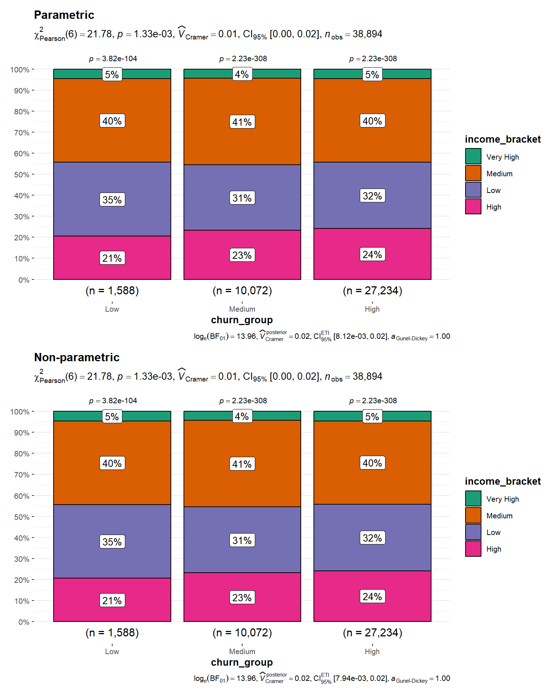
4.3 Churn_probability VS Education level
Code
p5 <- ggbarstats(customer, education_level, churn_group, type="parametric", title = "Parametric")
p6 <- ggbarstats(customer, education_level, churn_group, type="nonparametric",title = "Non-parametric")
p5/p6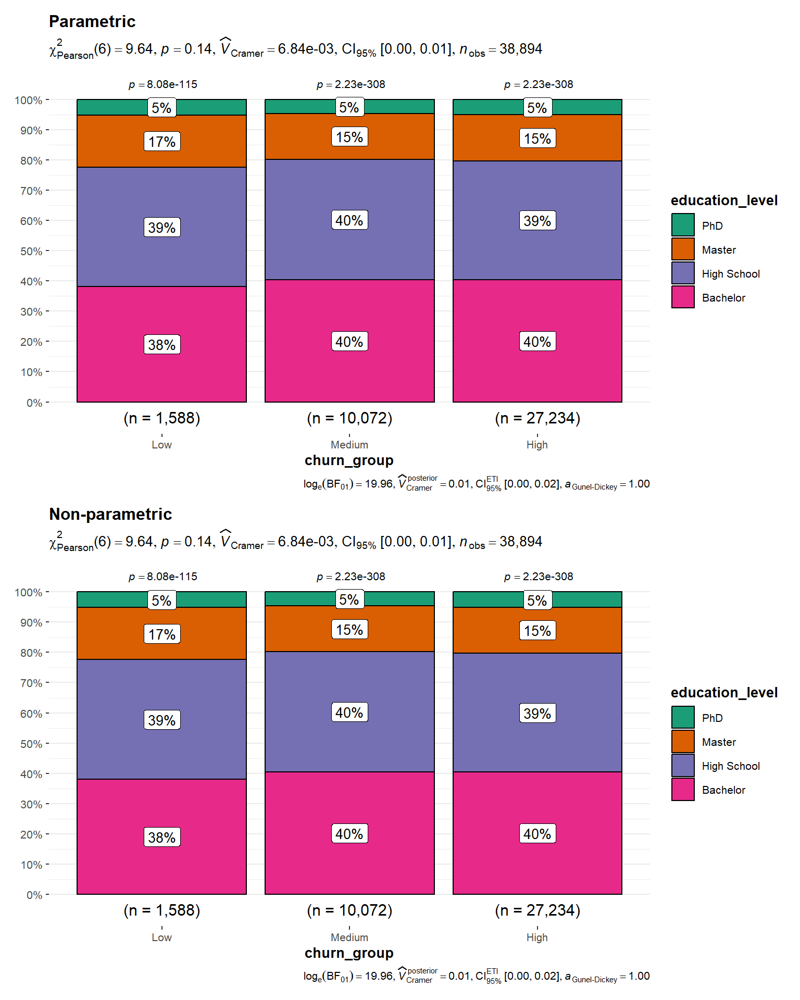
4.4 Churn_probability VS Marital status
Code
p7 <- ggbarstats(customer, marital_status, churn_group, type="parametric", title = "Parametric")
p8 <- ggbarstats(customer, marital_status, churn_group, type="nonparametric",title = "Non-parametric")
p7/p8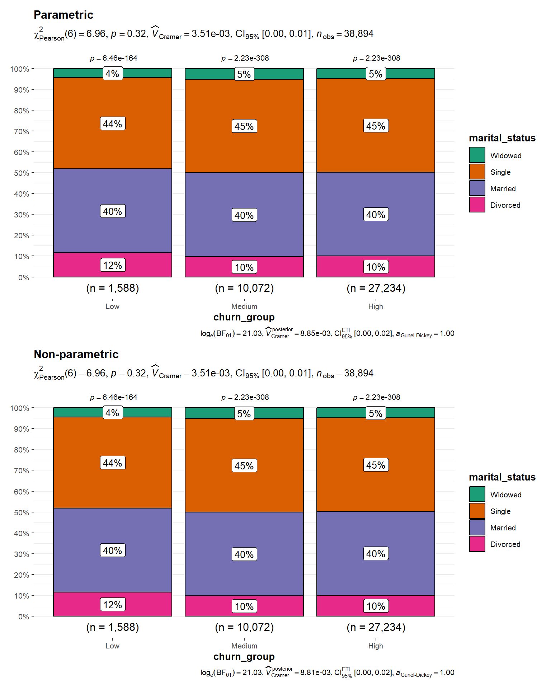
4.5 Churn_probability VS Customer segment
Code
p9 <- ggbarstats(customer, customer_segment, churn_group, type="parametric", title = "Parametric")
p10 <- ggbarstats(customer, customer_segment, churn_group, type="nonparametric",title = "Non-parametric")
p9/p10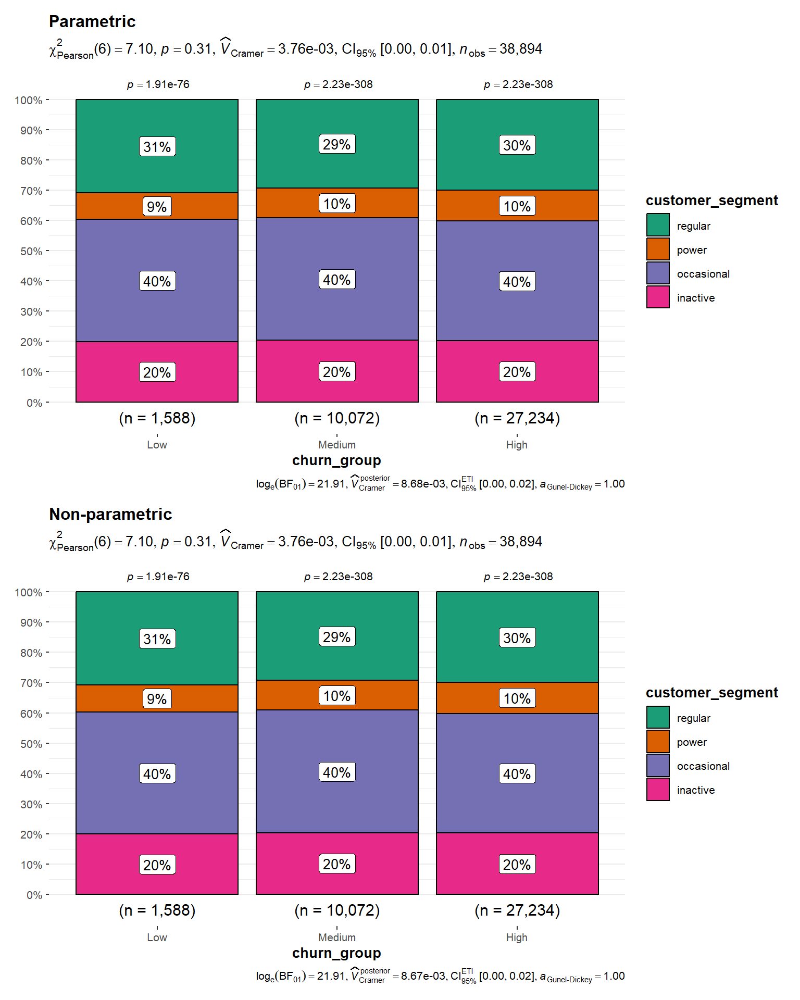
4.6 Churn_probability VS Savings account
Code
p11 <- ggbarstats(customer, savings_account, churn_group, type="parametric", title = "Parametric")
p12 <- ggbarstats(customer, savings_account, churn_group, type="nonparametric",title = "Non-parametric")
p11/p12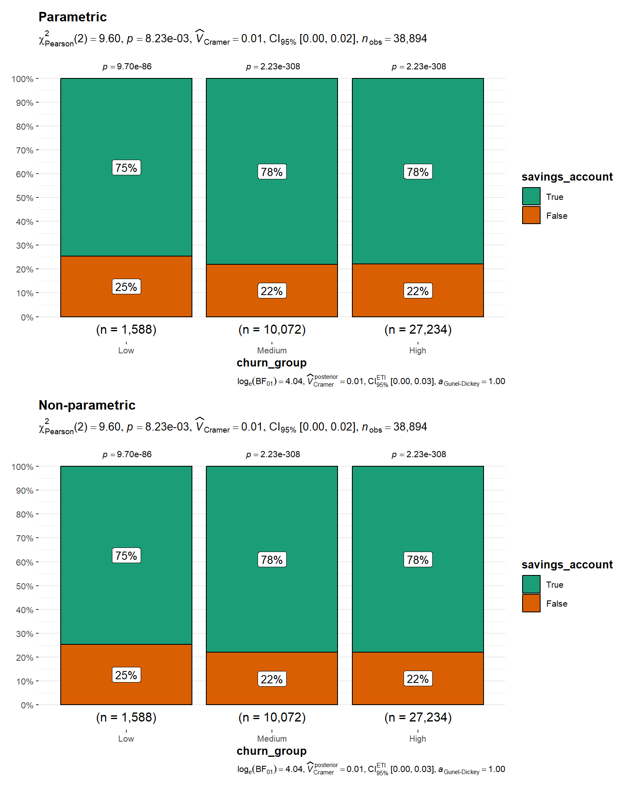
4.7 Churn_probability VS Acquisition channel
Code
p13 <- ggbarstats(customer, acquisition_channel, churn_group, type="parametric", title = "Parametric")
p14 <- ggbarstats(customer, acquisition_channel, churn_group, type="nonparametric",title = "Non-parametric")
p13/p14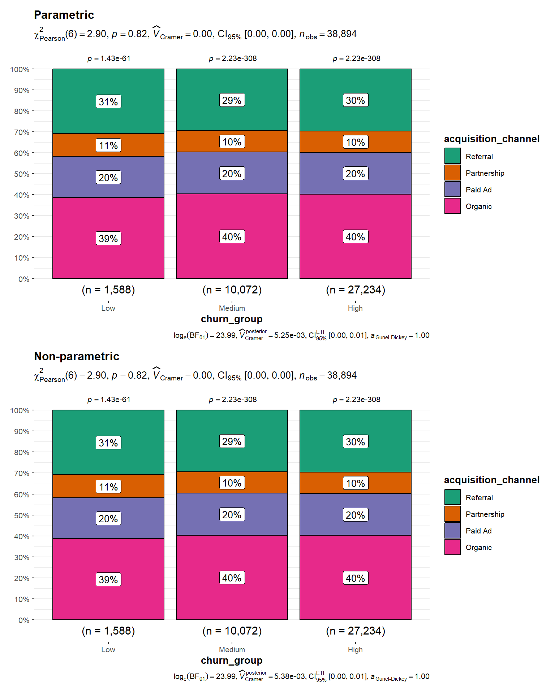
4.8 Churn_probability VS Number of active products
Code
p15 <- ggbarstats(customer, active_products, churn_group, type="parametric", title = "Parametric")
p16 <- ggbarstats(customer, active_products, churn_group, type="nonparametric",title = "Non-parametric")
p15/p16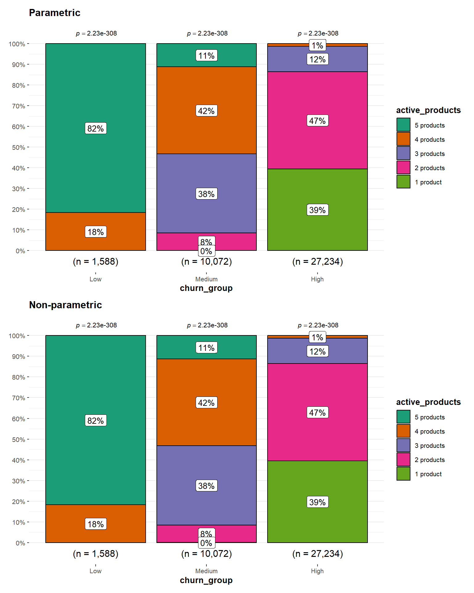
4.9 Churn_probability VS Satisfaction score
Code
p17 <- ggbarstats(customer, satisfaction_score, churn_group, type="parametric", title = "Parametric")
p18 <- ggbarstats(customer, satisfaction_score, churn_group, type="nonparametric",title = "Non-parametric")
p17/p18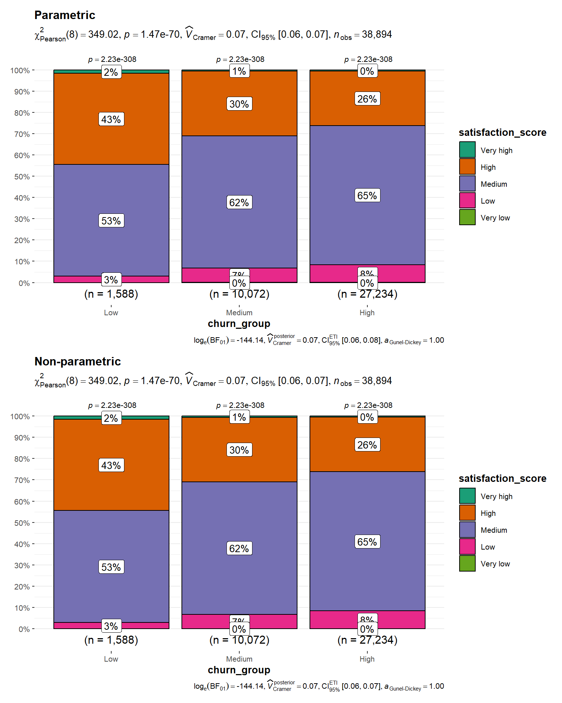
4.10 Churn_probability VS Feedback sentiment
Code
p19 <- ggbarstats(customer, feedback_sentiment, churn_group, type="parametric", title = "Parametric")
p20 <- ggbarstats(customer, feedback_sentiment, churn_group, type="nonparametric",title = "Non-parametric")
p19/p20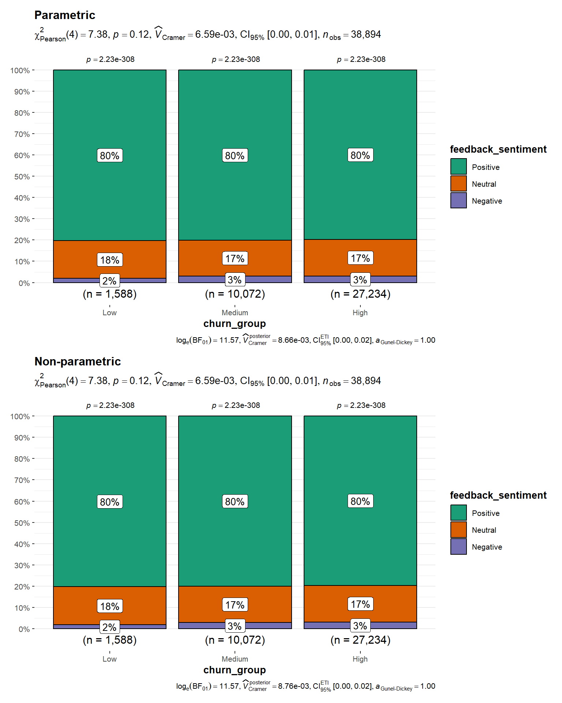
4.11 Churn_probability VS Customer lifetime value
Code
p21 <- ggbarstats(customer, clv_segment, churn_group, type="parametric", title = "Parametric")
p22 <- ggbarstats(customer, clv_segment, churn_group, type="nonparametric",title = "Non-parametric")
p21/p22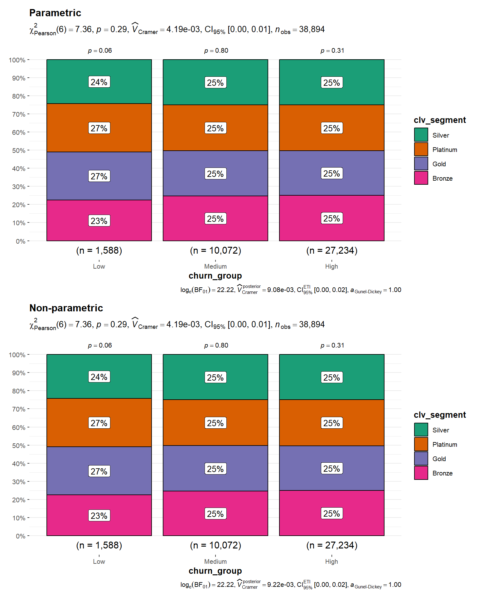
4.12 Churn_probability VS Average login frequency
Code
p23 <- ggbarstats(customer, app_logins_group, churn_group, type="parametric", title = "Parametric")
p24 <- ggbarstats(customer, app_logins_group, churn_group, type="nonparametric",title = "Non-parametric")
p23/p24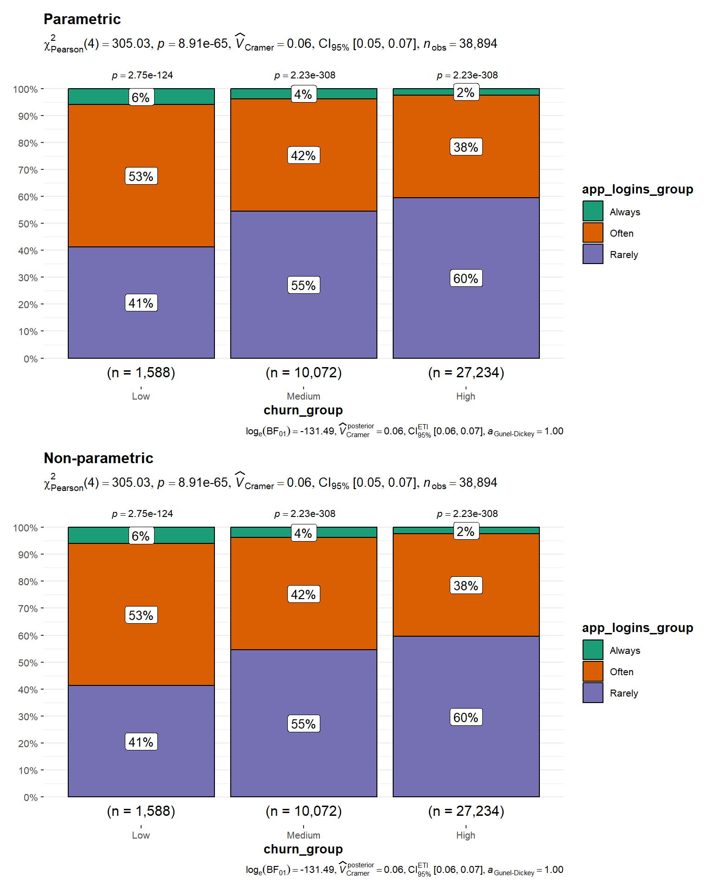
5. Storyboard - UI Design
This dashboard is designed to help users explore customer behavior in a Latin American fintech platform. The storyboard structure guides users from a high-level overview to deeper analysis, including customer demographics, transaction patterns, customer segmentation, and churn analysis.
The dashboard contains four main sections:
Summary
Exploration
Cluster Analysis
Decision Tree Analysis
Each page allows users to interact with the data through filters, visualizations, and statistical analysis.
5.1 Summary tab
The Summary page provides a high-level overview of the customer dataset and key business metrics. It allows users to quickly understand the overall status of the customer base before exploring detailed analysis.
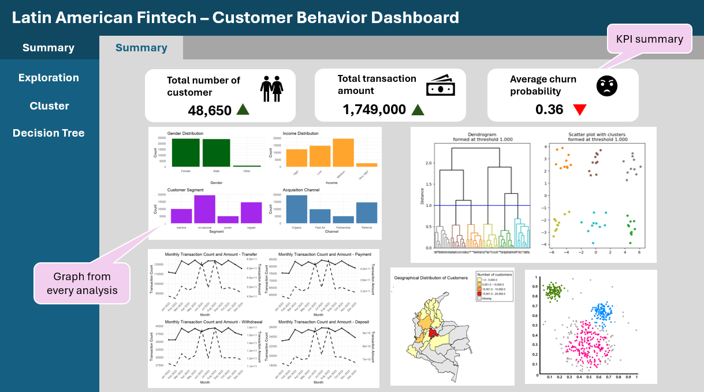
At the top of the dashboard, three Key Performance Indicators (KPIs) summarize important metrics. These KPIs help decision-makers quickly assess the overall performance of the fintech platform.
Below the KPI section, several charts provide an overview of customer characteristics and behaviors. These visualizations provide a quick understanding of the customer base and highlight patterns that may require further investigation.
5.2 Exploration tab
The Exploration page allows users to perform Exploratory Data Analysis (EDA) by dynamically selecting variables and visualization types and the confirmatory Data Analysis page allows users to statistically validate relationships between variables. This page helps users explore relationships between different customer attributes.
5.2.1 Customer overview tab
The main goal of this page is to allow users to interactively explore customer characteristics and distributions.
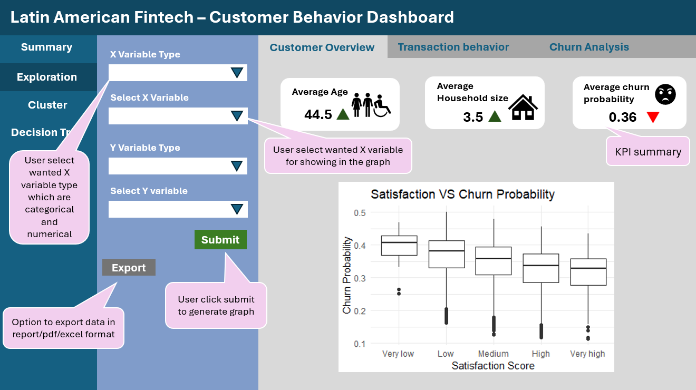
At the top of the dashboard, three Key Performance Indicators (KPIs) summarize important metrics. These metrics provide quick insights into customer demographics and risk levels.
Variable Selection
There are a filter bar that users can choose X and Y variable type whether they want categorical or numerical variable. After select type of variable user can select which variable in that type that they want to discover the relationship in the Select X/Y Variable filter. User click Submit botton to display in the visualization.
The visualization will be consisted of 4 possible pairs of x and y variable type. The visualization will shown in different plot as shown in table below
| X Variable Type | Y Variable Type | The Visualization |
|---|---|---|
| Numerical | Numerical | Scatter plot |
| Numerical | Categorical | Box plot |
| Categorical | Numerical | Box plot |
| Categorical | Categorical | Heatmap |
This allows users to explore different relationship between all variables and flexibility helps users view the data from different perspectives
Export Option
This allows users to easily share findings with stakeholders.
Geographic Distribution
A map visualization displays the geographical distribution of customers across regions, helping identify areas with higher customer concentration.
5.2.2 Transaction behavior tab
The Transaction Behavior tab allows users to analyze customer transaction patterns over time. This page focuses on understanding how different customer segments perform in terms of transaction activity and transaction value.
By allowing users to filter the data based on customer value segments, time periods, and transaction types, this page helps identify behavioral patterns and usage trends within the fintech platform.
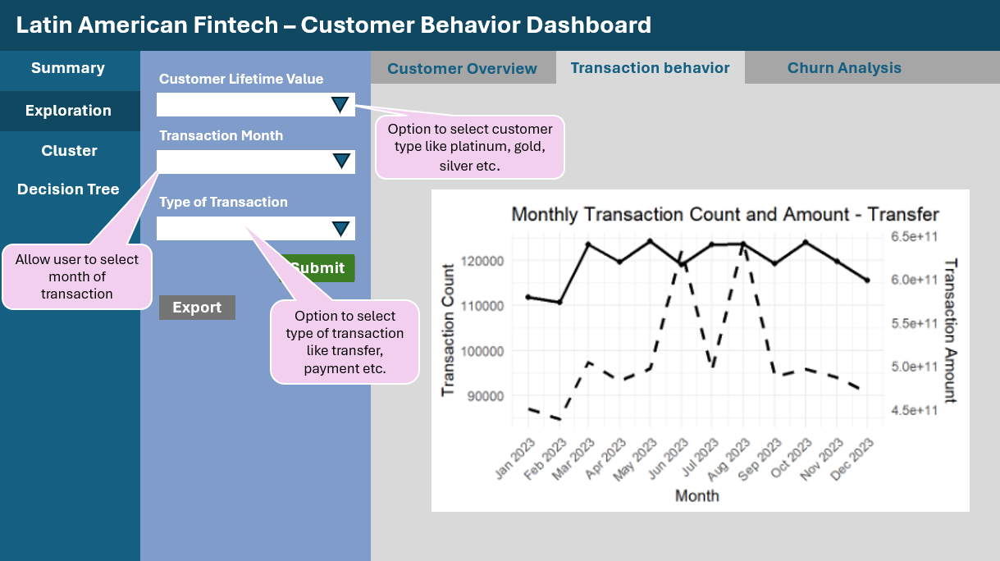
Customer Lifetime Value Selection
Users can select a Customer Lifetime Value (CLV) segment from the dropdown menu. This filter allows users to analyze how transaction behavior differs across customer value tiers. For example, higher-value customers may show higher transaction frequency or larger transaction amounts.
Month Selection
Users can select the month or time period of transactions to focus on specific periods of activity.
Transaction Type Selection
Users can filter the data based on type of transaction, such as:
Transfer
Payment
Withdrawal
Deposit
This feature helps users understand which types of financial activities are most common among customers.
The results are displayed using two line graphs in one plot which are transaction count line and transaction amount line. These will helps identify transaction frequency trends.
5.2.3 Churn analysis tab
The objective of this page is to allow users to confirm statistically significant relationships between customer attributes and churn risk. Instead of only visual exploration, this page also enables hypothesis testing.
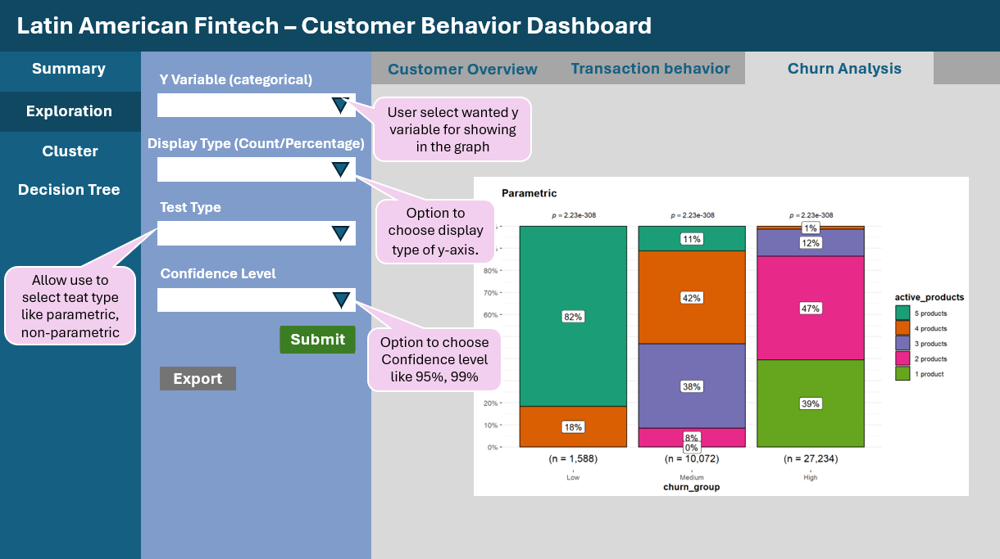
Y Variable Selection
Users can choose a categorical variable for the Y-axis to analyze relationships with churn groups.
Examples include:
Active products
Customer segments
Income level
Education level
Display Type Selection
Users can choose how the results are displayed whether they want to see data in count or percentage value. This helps users interpret the results based on absolute numbers or proportions.
Statistical Test Selection
Users can choose the statistical test type which are parametric teat or non-parametric test which determines the significance threshold used in the hypothesis test.
The results are displayed using stacked bar charts, showing the distribution of variables across churn probability groups.
5.3 Cluster Analysis tab
The Cluster Analysis tab allows users to explore customer segmentation using clustering techniques. The objective of this page is to identify groups of customers with similar characteristics or behaviors. By understanding these segments, businesses can develop more targeted marketing strategies and improve customer engagement.
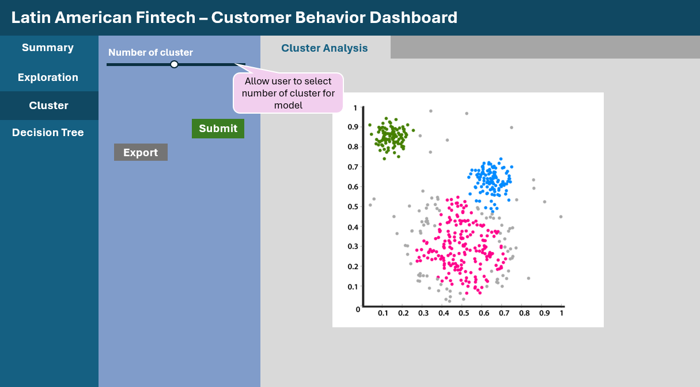
Number of Clusters Selection
Users can select the number of clusters (k) from a slide bar. This feature allows users to experiment with different segmentation levels.
The clustering results are displayed using a scatter plot visualization, where each point represents a customer and colors represent different clusters.
5.4 Decision tree tab
The Decision tree tab is designed to identify the key factors that influence customer churn probability. This page uses a decision tree model to analyze relationships between customer attributes and churn risk.
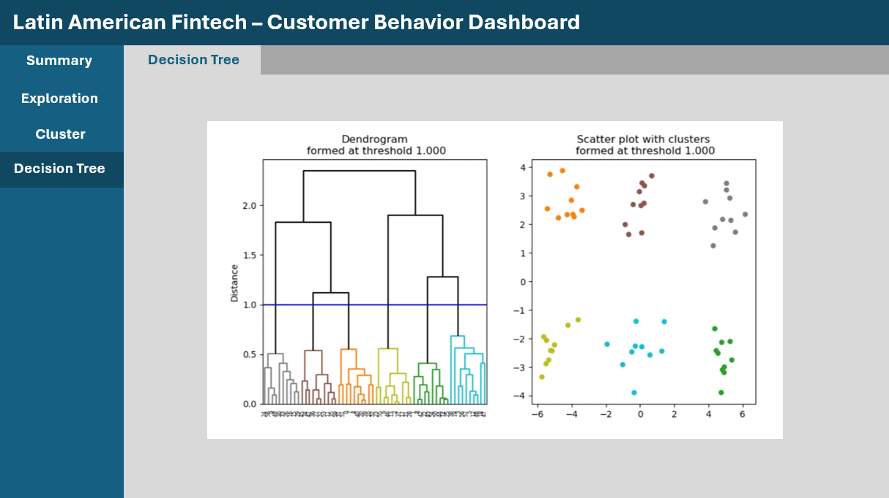
The main output of this page is a decision tree diagram that illustrates how customers are classified into different churn probability groups based on their characteristics.
Each branch of the tree represents a decision rule based on a specific variable, while each node represents a split in the data that separates customers into different groups.
This visualization helps users easily interpret how different customer attributes influence churn risk.
6. Reference
https://www.sciencedirect.com/science/article/pii/S2352340926000375